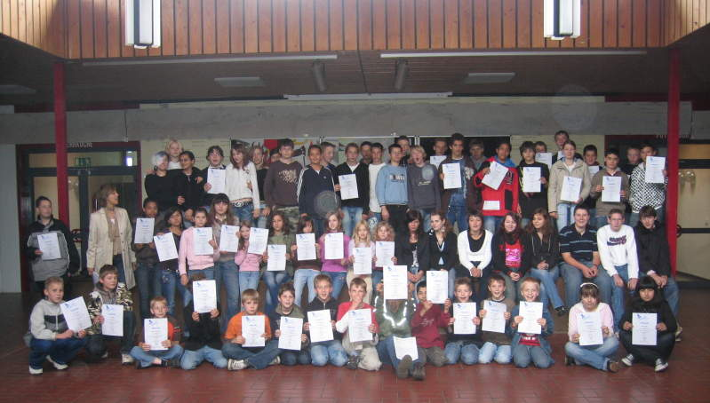

Chemie
Experimentalwettbewerb "Chemie entdecken"
Tradition an der Gerhart-Hauptmann-Realschule
Bereits 15 Mal in Folge, seit 1/2001, hat die Gerhart-Hauptmann-Realschule an dem Kölner Experimentalwettbewerb "Chemie entdecken" für die Klassenstufen 5 - 10 teilgenommen.
Mit zahlreichen Urkunden wie "mit Erfolg teilgenommen" sowie einigen "mit großem Erfolg teigenommen" bis hin zu Urkunden "mit besonderem Erfolg teilgenommen" wurden teilnehmende Schülerinnen und Schüler geehrt.

Die Teilnahme an den Wettbewerben wurde von dem ehemaligen 2. Konrektor der Gerhart-Hauptmann-Realschule, Herrn Lisson, im Jahr 2001 ins Leben gerufen. Bald konnte er auch seine Chemiekolleginnen Frau Olbrich und Frau Schlicker für eine Teilnahme - gleich mit ganzen Klassenverbänden - begeistern. Der Höhepunkt der Urkundenverteilung für erfolgreiche Arbeit erfolgte mit dem Thema "Seifen - was ist das?" im Jahr 1/2007. 78 Urkunden wurden im Sommer 2007 verteilt, wobei allein die ehemalige Klasse 5b (heute 6b) unter der Leitung von Frau Schlicker mit 17 Urkunden einen absoluten Rekord darstellten.
Im Schuljahr 2007/2008 leitete Frau Lisson (neue Chemie / Biologie-Lehrkraft an der Schule) eine AG "Chemie entdecken" für Schülerinnen und Schüler der 5. Jahrgangsstufe. Mehrere Teilnehmer durften sich anschließend über eine Urkunde freuen.
Die Schüler Alexander Herborn und Jessica Weinbach, betreut von Frau Schlicker, nahmen bereits zum 6. Mal in Folge an dem Wettbewerb teil.
Alexander Herborn, mit 6 Urkunden beglückt, erwartet aufgrund seiner dreimaligen nacheinander erteilten Urkunden "mit besonderem Erfolg" am 10.6.2008 in Köln an der Uni wiederum eine besondere Auszeichnung und darüber ein besonderes Geschenk wegen mehrfacher Auszeichnung.
Jessica Weinbach wurde zum 4. Mal mit der Urkunde "mit großem Erfolg" geehrt. Zwei weitere Male erhielt sie die Urkunde "mit besonderem Erfolg" (höchste Auszeichnung!). Beide Schülerinnen streben nach Beendigung der Schulzeit eine Ausbildung im chemischen Sektor an.

1 / 2001 (De-Inking - Ein Schritt zu neuem Papier)
2 / 2001 (Chemie ist life-science)
1 / 2002 (Kleber - bärenstark)
2 / 2002 (Dem Korrosionsmonster auf der Spur)
1 / 2003 (Schriftgeheimnisse)
2 / 2003 (Sprudelnder Antrieb - Brausetabletten)
1 / 2004 (Banane - einfach spannend)
2 / 2004 (Die tolle Knolle!)
1 / 2005 (Alles im grünen Bereich?)
2 / 2005 (Mit Chemie auf Spurensuche)
1 / 2006 (Salz oder Zucker?)
2 / 2006 (Mikrolabor Hefezellen)
1 / 2007 (Seifen sind was?)
2 / 2007 (Handwärmer - einfach heiß)
1 / 2008 (Milch macht's)